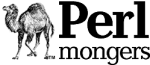
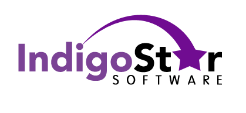
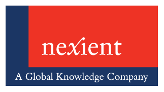

The Toronto Perl Mongers does not collect membership dues. We are, thus, dependant on "the kindness of strangers"; OK, not "strangers", but the contributions are from many sources, including the following:
|  |
First and foremost, we are indebted to several people within our own membership. Largely private contributions enable us to host out-of-town guest speakers. The use of the camel image in association with the Perl language is a trademark of O'Reilly & Associates, Inc. Used with permission. |
|  |
IndigoStar software, for donating our virtual facilities, and a variety of other sponsorships; as well, we want to express our thanks for his excellent Microsoft Windows build of Perl at IndigoPerl |
|  |
Nexient Learning, and in particular Scott Williams, for hosting our monthly fleshware meetings. |
|
The O'Reilly User Group Program for ongoing donations of Perl materials for our membership, and to our individual members. |